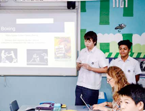

English

Overview
The English language is at the core of the study students undertake at Sha Tin College. It is the medium through which students are educated and develop students’ understanding of the wider world. It is also, a world language through which people communicate and conduct business on a global scale.
Therefore, it goes without saying that a high level of competence in English is becoming increasingly essential for a person to participate fully and successfully in a rapidly changing world. Apart from the very practical functions of the English Language, it is also a treasure trove of many rich and fine literary traditions and works.
Students in Years 10 and 11 study IGCSE English and IGCSE English Literature. Whilst each of these is a subject in its own right leading to a separate qualification, the courses are taught alongside each other and are inter- dependent. A very small number of students will, in addition to the above, undertake the Cambridge IGCSE English as a Second Language programme at the end of Year 10 (See p.48). Both IGCSE English and IGCSE English Literature are assessed through coursework and end-of- course examinations.
English Language
Learning Aims
The specific aims of this course are to: develop students understanding of the spoken word and the capacity to:
-
•Participate effectively as both speakers and listeners
-
•Develop the ability to read, understand and respond to material from a variety of sources and the ways in which writers create their effects
-
•Develop the ability to construct and convey meaning in written language, matching style to audience and purpose
-
•Develop students’ skills in speaking and listening, reading and writing; provide students with qualifications that are essential for university entrance and employment
-
•Prepare students for the English component of the International Baccalaureate that students will study in Years 12 and 13
Course Content
The course is designed to be spread out over a period of two years, requiring students to undertake a breadth of reading and writing activities, a range of specific oral and written coursework assignments and preparation for a written examination. Integral to the above is the study of an Anthology related to both coursework and the examination.
Assessment
Both IGCSE English and IGCSE English Literature are assessed through coursework and an end-of-course examination. Coursework takes up 30% of the total assessment, while the other 70% is an examination split into 3 sections.
The IGCSE English Language coursework component comprises one written response based on the compulsory study of an IGCSE English Anthology text and related texts, one written response that is personal or imaginative writing, an individual talk given before the class and teacher, participation in a formal Group Discussion, and participation in a paired oral activity.
The total duration of the examination is 2 hours and 15 minutes. Section A of the examination involves answering comprehension type questions on an unseen passage. Section B is a written response to one of the IGCSE English Anthology passages and one additional writing task. Section C is a written response requiring a specific style and format.
English Literature
Learning Aims
The specific aims of this course are that students’ language and critical skills are developed through having the opportunity to:
-
•Engage with and respond to literary texts from around the world
-
•Develop a critical appreciation of the writer’s craft through close textual study and wide reading
-
•Explore through literature their own and others’ cultures and societies
-
•Enjoy reading literature and understand and appreciate its influence on individuals and societies
-
•Explore literature as a means of emotional and intellectual growth.
Course Content
This requires the study of prose, drama and poetry. The literature derives from a range of different cultures and the nature of the course and the examination allows students to make informed but personal responses to the texts studied. The course encourages the reading of literature from different social, historical and cultural backgrounds; allows for the study of world literature in translation and offers a variety of question types in the examination.
Assessment
Similar to IGCSE English Language, in the IGCSE English Literature (Edexcel 4ETO), students will be assessed through both coursework and an end-of-course examination.
Coursework takes up 40% of the total assessment, while the other 60% is an examination split into 2 sections.
The IGCSE English Literature coursework comprises one written assignment based on a study of poetry from the IGCSE English Literature Anthology.
The total duration of the examination is 1 hour 45 minutes. Part 1 is a written answer to 1 question on a specified novel / anthology of short stories (Prose) studied during the course. Part 2 is a written answer to 1 question on a specified play (Drama) studied during the course. This is a “closed” book examination which means that students will not be able to take the texts into the examination with them.